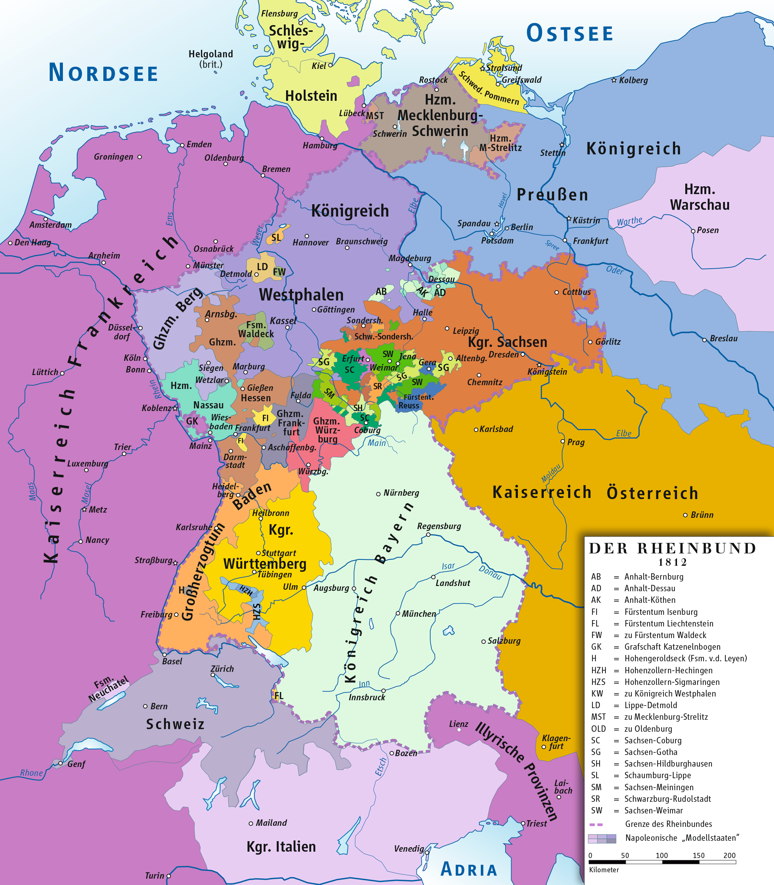
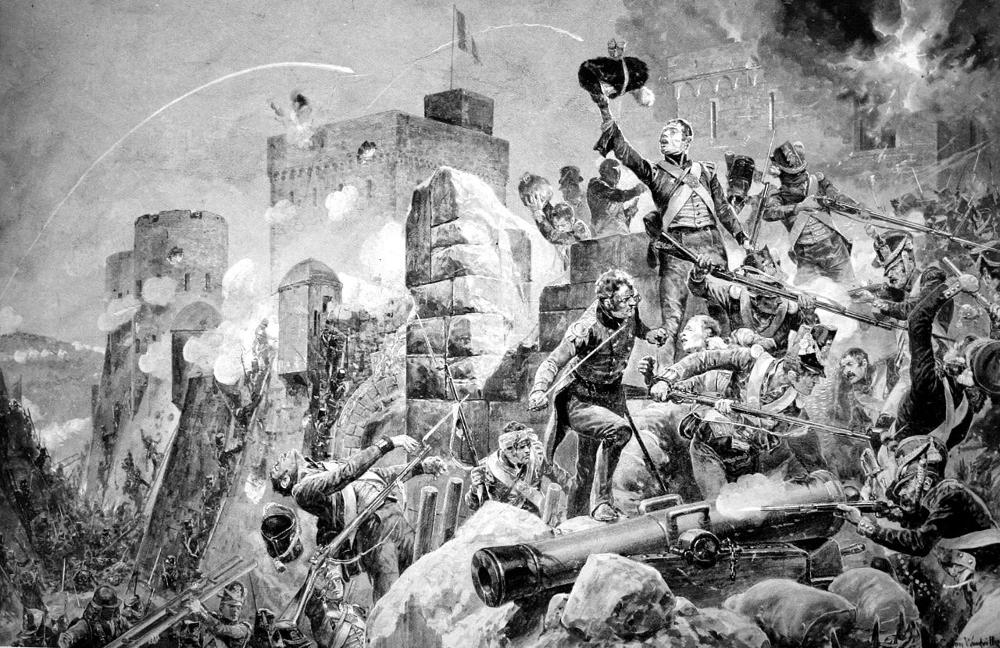
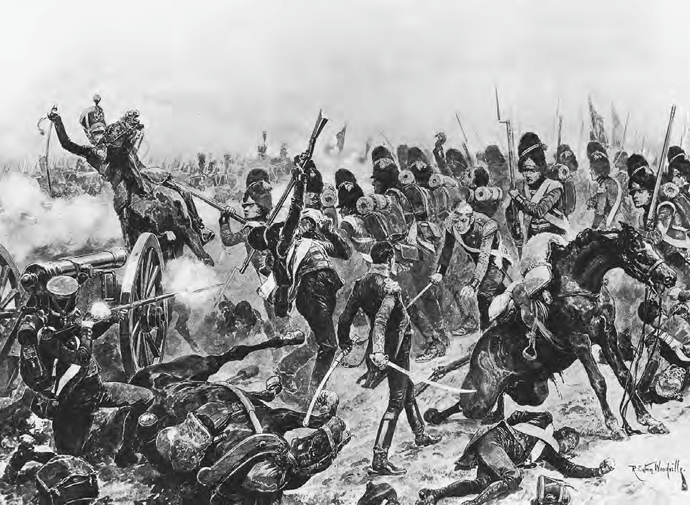

1812년 - 누구 편에 붙어야 하나 (상)
게시: 2019-07-08T06:30:10+09:00
이제 프랑스와 러시아 사이에 전쟁이 벌어질 것이라는 것이 명백해지자, 유럽 각국은 이 세기의 대결을 놓고 어느 편에 붙을 것인지 판단하느라 분주히 움직였습니다. 일차원적으로 생각하면 굳이 힘센 제국들끼리 싸움질을 하는데 굳이 다른 나라들이 꼭 끼어들어야 하는 것은 아니었습니다. 가장 나쁜 평화가 가장 좋은 전쟁보다 더 낫다는 말에 대해 거부감을 가지는 분들이 많겠지만, 그건 편하게 후방에서 입으로 떠들 때나 통하는 거부감입니다. 당장 바로 옆의 전우들이 내장을 쏟아내며 고꾸라지고 나도 바로 다음 순간 언제든지 팔다리가 끊어져 나갈 수 있다고 생각하면, 특히 그런 희생자가 자기가 사랑하는 아들이나 딸, 손자일 경우에는 누구나 어떻게든 당장 휴전 조약을 바라는 법입니다. 물론, 1812년 당시 유럽 각국에서 어느 쪽에 붙을 것인지를 결정하는 사람들은 자기나 자기의 아들이 적의 대포알에 노출될 사람들은 아니었습니다. 생각해보니 그건 현대에서도 대부분 마찬가지네요.
애초에 나폴레옹 덕분에 프로이센과 오스트리아의 주도권 하에서 벗어나 땅도 넓히고 왕국이 될 수 있었던 라인연방(Confédération du Rhin, 독일어로는 Rheinbund) 소속의 독일 소국들은 선택권이 없었습니다. 당연히 이들 국가 소속의 독일 시민들은 나폴레옹과 알렉산드르의 대결, 좀더 근본적으로 보면 프랑스의 부르조아 계급과 영국의 부르조아 계급간의 투쟁에 끼어들어 피를 흘리고 싶지 않았습니다. 하지만 이들을 지배하던 왕과 대공(Fürsten, 영어로는 Prince)들 중 상당수는 나폴레옹 못지 않은 열정을 가지고 러시아 원정에 협조했습니다. 먼저 나폴레옹이 미개한 독일인들에게 프랑스식 입헌 군주국의 모델을 보여주겠다며 만든 베스트팔렌(Westphalen) 왕국의 국왕은 나폴레옹의 막내동생 제롬(Jerome)이었습니다. 또 베르크(Berg) 공국의 지배자는 나폴레옹의 매제이자 나폴리 왕국 국왕인 뮈라(Murat)였고요. 이런 친인척들 외에도 나폴레옹에게 진정으로 협조적인 독일 소국왕들은 생각보다 꽤 많았습니다. 바이에른, 뷔르템베르크, 바덴, 헤세 등의 국왕들과 대공들은 어쩔 수 없이 나폴레옹에게 굴복한 군주들이 아니라, 스스로 프랑스 계몽주의가 근대화를 위한 옳은 방향이라고 믿고 나폴레옹과의 협력을 택한 사람들이었습니다. 물론 그런 믿음의 배경에는 나폴레옹의 그랑다르메(Grande Armee)가 가진 무력이 있었다는 것을 부정할 수는 없겠지요.

(1812년 당시 라인연방의 소속 국가들입니다. 라인연방의 주요국가는 지도에서의 영토 크기로만 보면 베스트팔렌과 작센, 그리고 바이에른 정도라고 할 수 있습니다. 그러나 그 중에서 온나라가 친프랑스-친나폴레옹 정서를 가진 진짜 동맹국은 바이에른과 바덴, 뷔르템베르크라고 할 수 있었습니다. 생각해보면 모두 남부 독일의 카톨릭 국가들이군요.)
영국의 경우는 뭐 고민하고 자시고 할 것도 없이 당연히 러시아와 함께 반프랑스 전선의 최선봉에 나설 의지가 충만했습니다. 원래 영국은 자신은 피 한방울도 흘리지 않고 입만 털면서 지갑이나 여는 것으로 전쟁을 대신했기 때문에 프로이센이나 오스트리아로부터 원망과 조소의 대상이 되었습니다. 그러나 1812년 당시에는 영국도 꽤 당당하게 자신도 피를 흘리고 있다고 주장할 수 있었습니다. 스페인-포르투갈 전선에 당시 영국으로서는 꽤 큰 야전군인 3만 정도의 병력을 파견하여 그야말로 혈투를 벌이고 있었기 때문입니다. 3만이라고 하면 프랑스 그랑다르메(Grande Armee)로서는 고작 1개 군단에 해당하는 소규모 병력이었겠지만, 인구가 많지 않고 육군이 미약했던 영국으로서는 동원 가능한 전체 야전군을 다 동원했다고 할 수 있었습니다. 그러다보니 영국은 이 소중한 병력을 아끼느라 당장 온나라가 쑥대밭이 되고 있던 스페인 현지 사람들이 보기에는 정말 얌체처럼 몸을 사리긴 했습니다. 하지만 1814년 전쟁이 끝난 뒤에 집계를 해보면 영국군의 사망자는 총 3만5천이 넘었습니다. 그러니까 스페인-포르투갈 전장은 부족했던 영국 육군의 인원과 물자를 끊임없이 소모하고 있었던 것이지요. 물론 그 중에서 2만5천은 전투가 아닌 각종 질병으로 사망했습니다만 이건 당시 위생 상황으로서는 정상적인 수치로서 다른 전장 다른 나라 군대에서도 마찬가지였습니다.

(1812년 바다호스 요새 포위전입니다. 이 전투에서 4천5백의 프랑스군이 지키는 바다호스 요새를 2만7천의 영국-포르투갈 연합군이 3주간 포위 공격 끝에 함락시켰습니다. 프랑스군은 1천5백의 사상자를 냈고 나머지는 거의 모두 포로로 잡혔는데, 영국-포르투갈 연합군도 거의 5천의 사상자를 낼 정도로 큰 피해를 입었습니다. 함락 후에 영국군은 바다호스 시내를 잔혹하게 약탈하여, 최소 2백명에서 최대 4천명의 스페인 민간인 사상자를 냈습니다. 스페인이 영국의 동맹국임에도 불구하고 이런 참극이 벌어졌습니다.)
특히 1812년은 영국군이 지나치게 몸을 사린다고 비난하던 스페인 사람들이 입을 다물 정도로 영국군도 공세적으로 나온 첫 해였습니다. 이 해 1월, 웰링턴은 드디어 군수품 창고 및 물자 집적 등을 끝내고 포르투갈에서 스페인으로의 진군을 개시했던 것입니다. 프랑스군이 스페인에서 포르투갈로 쳐들어갈 통로가 뻔했던 것처럼, 역방향의 침공도 루트가 뻔했습니다. 웰링턴의 영국-포르투갈 연합군도 1810년 프랑스의 포르투갈 침공 때 마세나가 밟았던 경로를 정확하게 역순으로 밟아야 했습니다. 1812년 1월 시우다드 로드리고(Ciudad Rodrigo) 요새부터 함락시킨 웰링턴은 이어서 4월에는 바다호스(Badajoz)를 엄청난 혈투 끝에 함락시켰습니다. 이 두 요새를 함락시킴으로써 이제 스페인으로의 진격로가 활짝 열린 셈이 된 것이지요. 이때 놀랍게도 나폴레옹으로부터 영국 측에게 평화 협상을 하자는 제안이 날아옵니다. 어떠한 경우에도 영국과의 협상은 불가능하다고 공언하던 나폴레옹으로서는 굉장히 놀라운 입장 변화를 취한 것이었는데, 그만큼 당시 나폴레옹은 러시아 침공을 앞두고 후방 정리가 필요했던 것입니다. 원래 러시아 침공을 하게 된 근본 원인이 영국과의 전쟁이라는 점을 상기하면, 어떻게 보면 본말이 전도된 셈이었지요. 어쨌거나 나폴레옹의 평화 협상 조건은 영국으로서는 그다지 매력적이지 않은 것이었습니다. 이미 영국군이 완전히 장악한 상태였던 포르투갈 왕국을 원래의 왕가인 브라간사(Braganza) 왕정에게 반환하는 대신 스페인은 조제프를 국왕으로 하는 보나파르트 왕가 소유임을 인정해달라는 것이 주된 내용이었거든요. 그 외에 시실리 섬은 부르봉 왕가 출신의 사르데냐 국왕 페르디낭이 계속 보유하되, 나폴리 왕국의 소유권은 현행대로 나폴레옹의 매제 뮈라(Murat)가 계속 유지하게 해달라는 것이 딸려 있었습니다. 혹시 웰링턴이 시우다드 로드리고와 바다호스를 함락시키기 전에 이런 조건의 평화 협정을 제안했다면 영국이 받아들였을까요 ? 아마 영국은 그래도 거부했을 것입니다. 하물며 이제 스페인으로의 침공길이 활짝 열린 마당에 그런 조건을 수용할 이유가 없었지요. 영국은 단칼에 나폴레옹의 평화 제의를 거부하고 스페인으로의 침공 작전을 계속 했습니다. 웰링턴은 7월에 살라망카(Salamanca) 전투에서 마르몽(Marmont)의 프랑스군을 격파했고, 8월에 조제프는 수도 마드리드를 내주고 피난길에 나서야 했습니다.

(살라망카 전투에서 프랑스 보병들을 공격하는 영국군의 모습입니다. 한창 이기고 있는데 휴전하자고 하면 통할 리가 없지요.)
초지일관 당당했던 영국과는 달리, 프로이센의 입장은 좀 딱했습니다. 나폴레옹으로부터 처음부터 푸대접을 당하던 프로이센은 당연히 처음에는 러시아 측에 붙으려 했습니다. 심지어 전운이 감돌던 1811년에는 국왕 빌헬름이 러시아 자르 알렉산드르에게 밀사를 보내 10만의 프로이센군을 보태줄테니 선제 공격에 나서달라는 요청을 하기도 했지요. 하지만 러시아는 결코 호락호락하지 않았습니다. 알렉산드르는 막강 프랑스군과 같은 조건으로 정면 충돌해서는 승산이 전혀 없다고 정확하게 판단하고 있었습니다. 따라서 프로이센의 선제 공격 요청을 거절하고, 프랑스군을 러시아 국내로 깊숙이 끌어들여 방어전에 나설 것임을 분명히 했습니다. 이건 프로이센처럼 조그마한 나라로서는 상상하기 어려운 전략이었지요. 러시아가 저렇게 후퇴 일변도의 희한한 전략을 택한다는 것은, 프로이센으로서는 전국이 프랑스군에게 일방적으로 유린당하게 된다는 것을 뜻했습니다. 게다가 1812년 들어 오스트리아까지 프랑스군에 가담하기로 결정을 내리자, 이제 대세는 기울었다는 체념으로 뒤늦게 프랑스측에 가담하기로 합니다. 사실 이미 때늦은 결정이었습니다. 훨씬 더 일찍 나폴레옹에게 충성을 맹세했어도 프로이센에 대한 대접은 신통치 않았을텐데, 이렇게 모든 것이 결정되고 난 뒤에야 어쩔 수 없다는 식으로 가담한 프로이센에 대해 나폴레옹이 보내는 시선은 싸늘했습니다. 결국 프로이센은 2만의 야전군을 러시아 침공에 동원해야 했고, 그 외에도 4만2천의 추가 병력을 후방 수비 임무를 위해 프랑스군에 제공해야 했습니다. 게다가 자국 영토를 프랑스군 및 그 동맹군이 자유 통과할 수 있도록 허락해야 했습니다. 당연히 그 행군길에 프랑스군이 먹고 마시는데 소비하는 물자는 프로이센 국민들로부터 징발하여 충당했는데, 그 비용은 1806년 패전 당시 부과되었다가 아직 갚지 못하고 있던 전쟁 배상금을 상각해주는 형식으로 처리되었습니다. 한마디로 요약하면 그냥 공짜로 다 털렸다는 말이지요.
...To be continued...
Source : The Life of Napoleon Bonaparte, by William Milligan Sloane https://en.wikipedia.org/wiki/Peninsular_War#Allied_campaign_in_Spain https://en.wikipedia.org/wiki/Confederation_of_the_Rhine